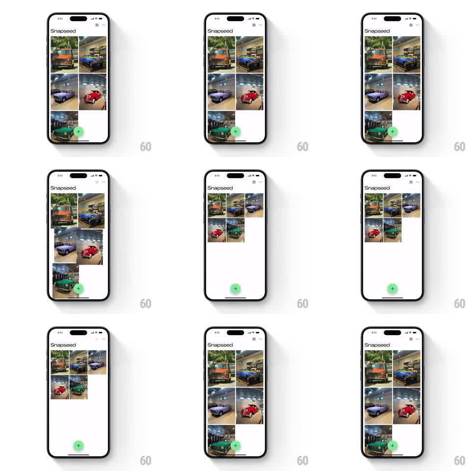

Media
Frame-by-frame

Rebuild this interaction 1:1: Snapseed's grid toggle - tapping the layout icon flips the photo grid between two and three columns, every card scaling and gliding to its new slot in one fluid motion.

Rebuild this interaction 1:1: Snapseed's grid toggle - tapping the layout icon flips the photo grid between two and three columns, every card scaling and gliding to its new slot in one fluid motion. ## Integration Integration: stack-agnostic spec - springs given as stiffness/damping, timed motions as duration + curve; map every value to your framework and animation library of choice. ## Scene White library screen: "Snapseed" wordmark top-left, a layout toggle icon top-right (grid/list glyph), a masonry-style grid of photo thumbnails (car photos), and a green circular + button bottom-right. ## Motion spec Pattern: animated grid reflow between column counts. - Tap the toggle: the icon swaps with a small rotate-pop (rotate 90deg + scale 0.8 -> 1, 250ms, spring ~340/16). - Every card animates from its old rect to its new rect simultaneously: position glides (spring ~300/22) while the card scales (2-col card to 3-col size, same spring) - no fade, no rebuild flash. - Cards farther down the list start their glide with a tiny delay (15ms per row) so the reflow reads as a wave rolling down the grid. - The grid's scroll position adjusts to keep the first visible card anchored. - The + button stays pinned and untouched. ## Calibration - All cards share one spring - the wave comes only from the per-row delay. - Cards never overlap during reflow: z-order by distance from top-left. ## Reduced motion Grid crossfades to the new layout (250ms). ## Don't miss - Aspect ratios: cards keep their image aspect through the scale; the grid is justified, not stretched. - The toggle icon must read its current state (which layout is active) at a glance.